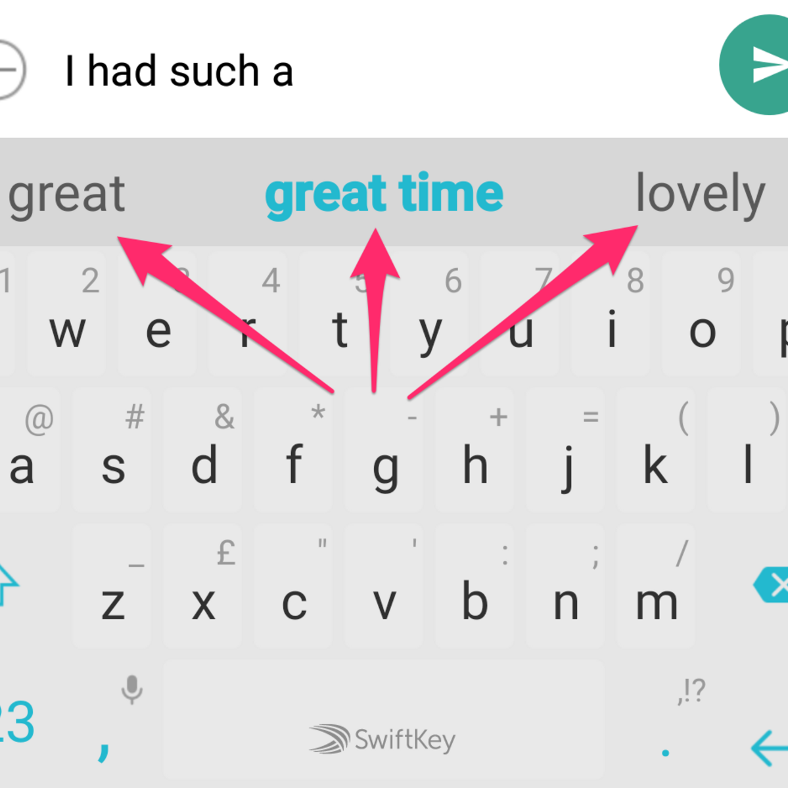

In the world of today, the technology development led to the increase in number of texting applications. In order to build a conversation with anyone sending a text is one of the way. It includes sending a message, writing an email or searching anything in the search engine. The main goal of the project is to build auto complete system in text processing. Auto-complete systems are recurrent in the daily use of mobiles or PCs while generating a text. Every time you type a message in the text box, you will often find suggestions to help you to complete the sentence. The suggestions will be based on most frequently typed messages. The core of the system will involve using pre-trained language models such as learning it with large datasets of text messages or conversations to understand the user writing patterns. This model will continuously analyze the text input and predict the next word based on evolving context of the sentence and also spell checks a particular word and suggest the correct spell of that word. We are going to implement it with python programming language and nlp methods like N-Gram model and LSTM(Long Short Term Memory).
